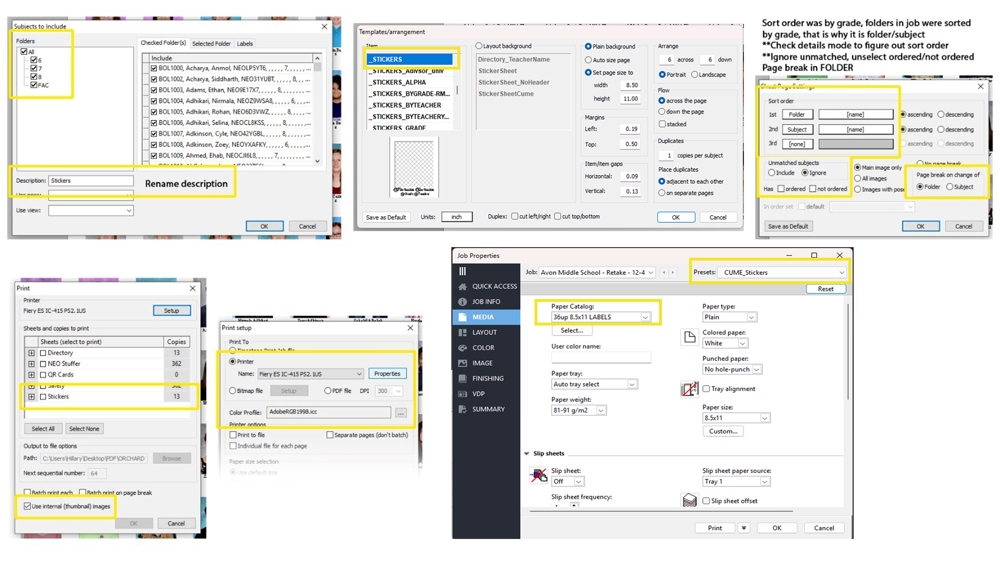
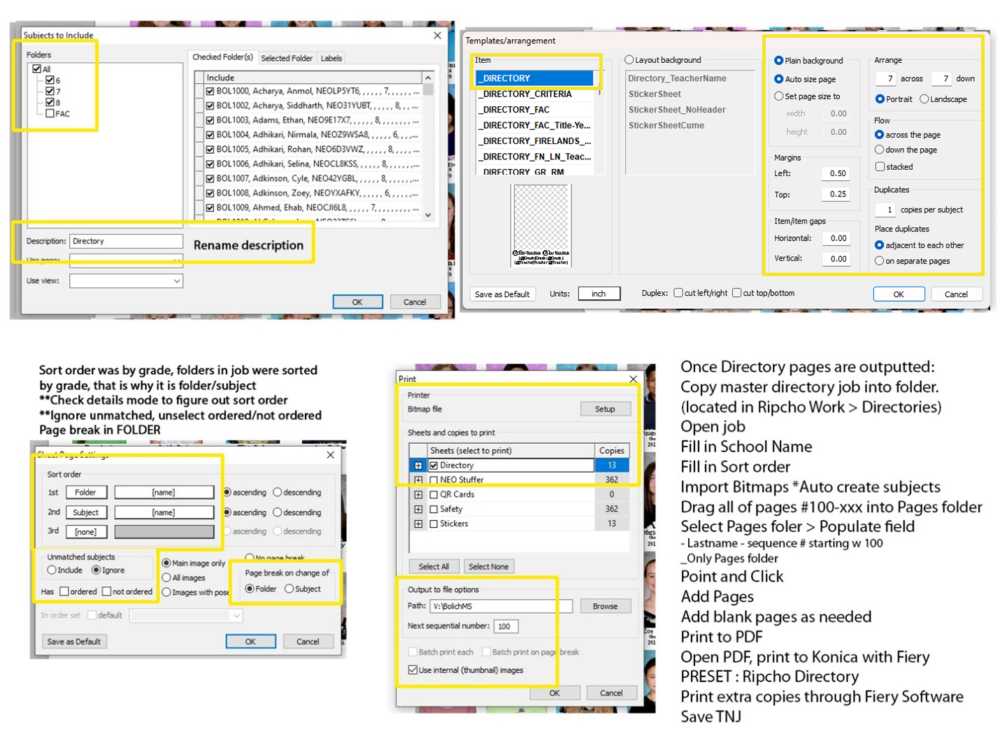

Printing & service items
Route each product to the correct queue only after the job and package configuration have passed review.
| Output area | Use | Control point |
|---|---|---|
| Noritsu | Photographic print output | Verify queue, job selection, print count, and first-output quality. |
| Konica | Press products and composites | Confirm approved media/tray, finish settings, and copies before release. |
| Dye Sub | Approved specialty/photo products | Check the assigned output path, product setup, and first finished item. |
| Labels, stickers & directories | Service-item output | Verify sorting, subject matching, and page-break/output settings before the run. |
Sticker setup
For the standard _STICKERS item sheet: use plain background, set page size to 8.50 × 11.00 in, portrait, 6 across × 6 down, left margin 0.19 in, top margin 0.50 in, horizontal gap 0.09 in, vertical gap 0.13 in, one copy per subject, and place duplicates adjacent to each other. Sort by Folder then Subject; ignore unmatched subjects and use a page break on Folder.


Directory setup
Use _DIRECTORY with plain background and auto size page: 7 across × 7 down, portrait, left margin 0.50 in, top margin 0.25 in, one copy per subject, duplicates adjacent. Sort Folder then Subject; ignore unmatched subjects and break pages by Folder. After directory pages output, copy the master directory job into the assigned Ripcho Work directory, import bitmaps with auto-create subjects, populate Page fields using last name and sequence beginning at 100, then print the finished PDF to Konica using the Ripcho Directory preset.

Dye Sub bitmap output
Select Generic Bitmap with the sRGB Color Space Profile.icm. Output JPEG files at 300 DPI to H:\Dye Sub\Mug; use a random-number filename and keep “Make copies of file for multiple copies” enabled. Honor cut marks when defined.

Release checklist
- Confirm the current job and correct workflow.
- Verify approved product, paper/media, queue, and quantity.
- Check first output for correct subject, color, trim, personalization, and count.
- Record output completion on the progress sheet; flag reruns immediately.